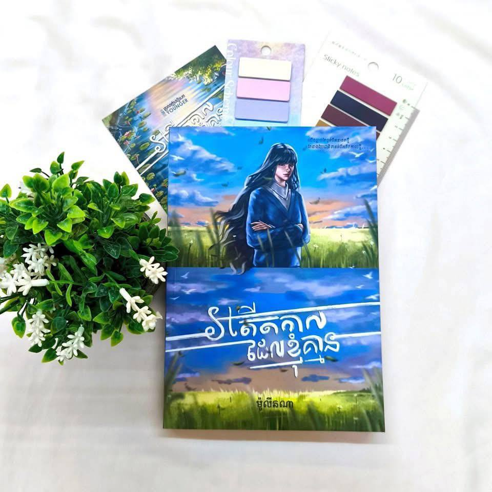

Contact Us

bookshop

bookshop@gmail.com

Phnom Penh
Social Media

Neng Development

@Huonneng111222

@hun.neng5
ច្បាស់ណាស់! រឿង “អតីតកាលដែលខ្ញុំគ្មាន” គឺជាចំណងជើងនៃរឿងដែលស្រមៃឡើងអំពីអតីតកាលមួយ ដែលអ្នកសរសេរមិនធ្លាប់បានប៉ះពាល់ ឬរស់នៅជាក់ស្តែងនោះទេ ប៉ុន្តែជារឿងដែលកើតចេញពីការស្រមៃនិងការរួមបញ្ចូលអារម្មណ៍ផ្ទាល់ខ្លួន។
ច្បាស់ណាស់! រឿង “អតីតកាលដែលខ្ញុំគ្មាន” គឺជាចំណងជើងនៃរឿងដែលស្រមៃឡើងអំពីអតីតកាលមួយ ដែលអ្នកសរសេរមិនធ្លាប់បានប៉ះពាល់ ឬរស់នៅជាក់ស្តែងនោះទេ ប៉ុន្តែជារឿងដែលកើតចេញពីការស្រមៃនិងការរួមបញ្ចូលអារម្មណ៍ផ្ទាល់ខ្លួន។ ខាងក្រោមនេះជារឿងខ្លីមួយមានចំណងជើងថា “អតីតកាលដែលខ្ញុំគ្មាន”៖អតីតកាលដែលខ្ញុំគ្មាន ខ្ញុំមិនធ្លាប់បានរស់នៅក្នុងសតវត្សរ៍ទី ១៩ឡើយ។ ខ្ញុំមិនដែលស្គាល់សម្លេងសេះឈ្លក់លើដីខ្សាច់ ក៏មិនធ្លាប់ជិះកាណែតក្រោមពន្លឺចន្ទ្រា។ ប៉ុន្តែចិត្តខ្ញុំ វិលត្រឡប់ទៅទីនោះជារៀងរាល់យប់នៅពេលភ្លៀងធ្លាក់ស្រាលៗ។ ខ្ញុំអើពើទៅនឹងរូបភាពស្ទើរតែរសាត់ មនុស្សស្ដ្រីក្នុងសម្លៀកបំពាក់ជ័រលើ កំពុងរត់ជិះកង់តាមផ្លូវថ្មកោងៗ មុខសើចដោយគ្មានការព្រួយបារម្ភ។ ខ្ញុំគិតថា ប្រសិនបើខ្ញុំធ្លាប់មាននៅក្នុងអតីតកាលនោះ ខ្ញុំនឹងជាមនុស្សដែលសរសេររឿងនៅលើក្រដាសក្រហម កោតសរសើរពិភពលោកដោយពាក្យមិនច្បាស់ ប៉ុន្តែចេះបង្ហាញអារម្មណ៍ជាច្រើនជាងពេលនេះ។ ខ្ញុំប្រាថ្នាថា ខ្ញុំអាចដើរតាមផ្លូវជើងកំព្រា ដែលបញ្ចប់នៅផ្ទះកណ្តាលព្រៃ បើកបង្អួចឲ្យខ្យល់ចូល ហើយស្ដាប់សម្លេងធម្មជាតិជំនួសស្មាតហ្វូន។ អតីតកាលនោះ មិនមែនជារបស់ខ្ញុំទេ។ តែវាដូចជាកន្លែងដែលចិត្តខ្ញុំបានរស់នៅឲ្យរួចរាល់។ ខ្ញុំគ្រាន់តែជាមនុស្សក្នុងអនាគត ដែលកំពុងស្រមៃអតីតកាលមួយដែលមិនមានខ្ញុំក្នុងនោះទេ។ តែអារម្មណ៍នៃភាពល្អស្រួល និងស្ងប់ស្ងាត់នៃអតីតកាលនោះ វាបាននៅជាប់ជានិច្ចក្នុងចិត្តខ្ញុំ។
bookshop
bookshop@gmail.com
Phnom Penh
Neng Development
@Huonneng111222
@hun.neng5